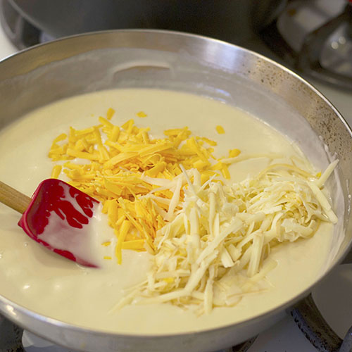

BlamCo Mac & Cheese!

pg65:
Mac & Cheese is a pre-packaged, highly processed food product found across the wasteland. BlamCo's instant version of the classic macaroni and cheese dish (elbow macaroni with white sauce and cheese) was packed with preservatives and sold in green or blue carton packages, with an EZ-Pull pour spout to make preparation easier.
Ready To Eat?

Then You Best Get Cookin'!
Notes:
Prep time:
30 Minutes
Cook time:
30 Minutes
Servings:
5
Pairs well with:
Roasted Veggies
Ingredients
- 1 lb elbow macaroni, cooked
- 2 medium carrots, chopped
- 1½ cups whole milk
- ½ cups heavy cream
- 2 tsp. worcestershire sauce
- ¼ cup all-purpose flour
- 2 tsp. garlic powder
- ¼ tsp. cayenne pepper
- 5 tbsp. unsalted butter
- 88 oz. sharp cheddar cheese, shredded
- 4 oz. fontina cheese, shredded
- salt and pepper
Instructions
- Fill a medium pot with water and bring to a boil, then:
- Add the carrots, cover, reduce the heat to medium, and simmer for 5 minutes, or until the carrots are tender.
- Drain and transfer the carrots into a blender.
- Add the milki, heavy cream, and worcestershire sauce. Blend until smooth.
- Combine the flour, ground mustard, garlic powder, and cayenne pepper in a small bowl, then:
- Place a large saucepan over medium-high heat and add the butter.
- Once the butter is melted, add the spiced flour while constantly whisking.
- After the butter and flour have combined into a roux, slowly whisk in the carrot and milk mixture until fully combined (Seen Below).

- Whisk in the cheddar and fontina cheese in small batches, then:
- Season with salt and pepper to taste.
- Add the cooked maracroni to the cheese sauce and stir to coat the macaroni fully.
- Enjoy!

[Return To Top]